Current Initiatives
Check out a list of our current projects and initiatives below.
🎙 PennHealthX Podcast
The Penn HealthX Podcast focuses on the intersection of medicine and business, with an emphasis on healthcare management, entrepreneurship, and technology (H-MET). Listen now on Apple Podcasts and SoundCloud.
🚀 SDoH Accelerator
Our SDoH Accelerator program provides early-stage startups and organizations working to improve social determinants of health (SDoHs) with pro-bono support from Perelman School of Medicine Students. PSOM consultants are paid fully by PennHealthX at no cost to partnered startups.
Interested startups prepare a high-level work plan outlining key deliverables that a PSOM student-consultant will assist with. Startups should then schedule a meeting with our VPs: SDoH Accelerator. For additional sources of support and funding, see our list of Penn Resources for Entrepreneurs.
Interested PSOM student-consultants should join the PennHealthX listserv to stay up-to-date on new SDoH Accelerator opportunities. Contact our VPs: SDoH Accelerator or email us for more information. Applications are accepted on a rolling basis.
🎧 PennHealthX Venture Fund
We offer non-dilutive venture funding for PSOM students developing innovative ideas in healthcare. The HealthX Venture Fund is a student-run fund that financially backs Penn students working to fill a need in our healthcare system. Awarded teams retain complete ownership of their idea — no equity or loan is involved. Teams can receive up to $15,000 in funding to develop their ideas. Applications are accepted on a rolling basis.
How It Works. There are two steps to our application:
- Submit an application here.
- Pitch your idea to the PennHealthX Venture Fund's board members and advisors.
Awarded grants can be up to $15,000, although typically range between $1,000-2,000.
Eligibility. In order to be eligible for venture funding, your team must...
- be working on a healthcare-related venture; and
- include as an integral member either (A) a PSOM MD candidate; (B) a recent PSOM MD graduate (less than 2 years removed from terminal degree); or (C) a Penn medical trainee.
Priority will be given to ventures from current PSOM students. Applications for follow-on funding will be considered, although must demonstrate clear progress from the initial grant.
Previously Funded Ventures.
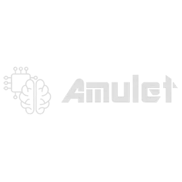
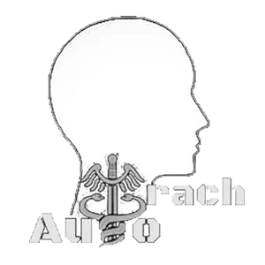
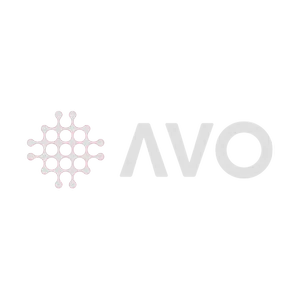
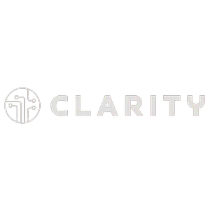
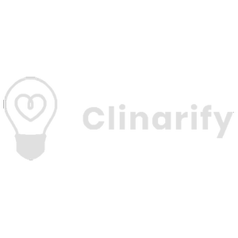
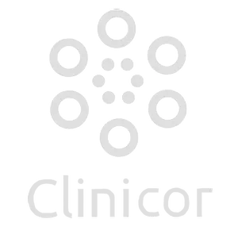
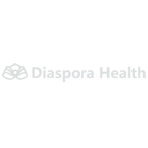
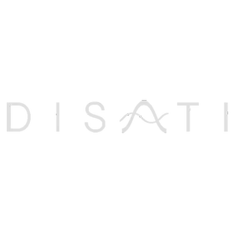
 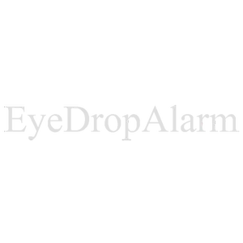
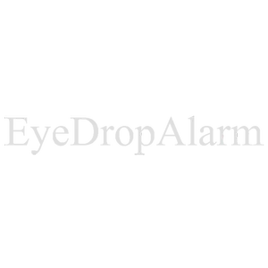
 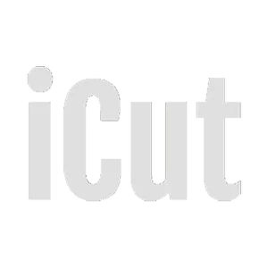
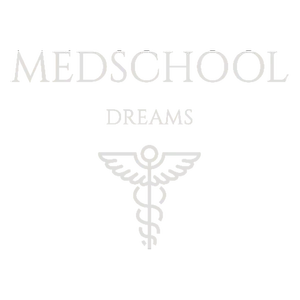
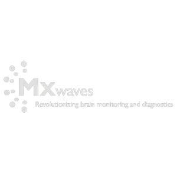
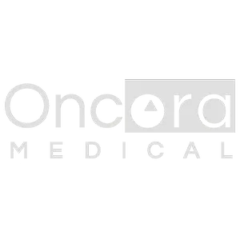
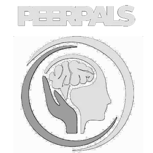
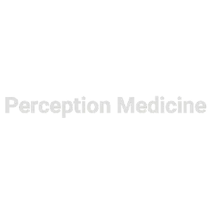
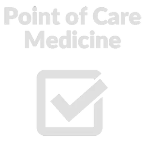
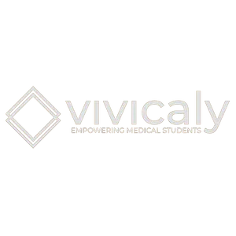
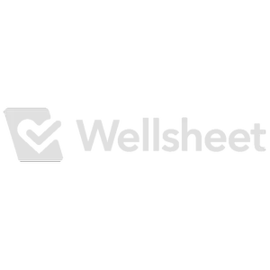
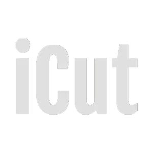
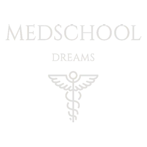
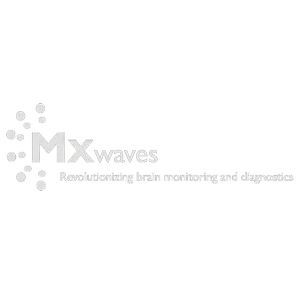
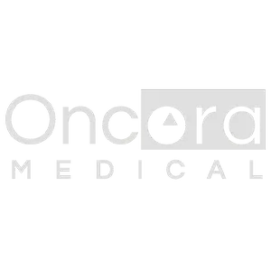
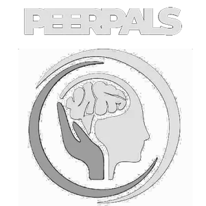
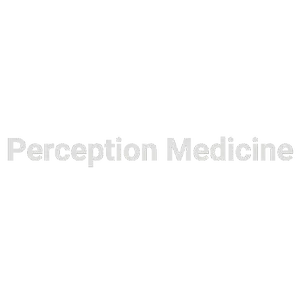
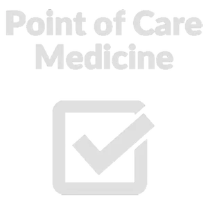
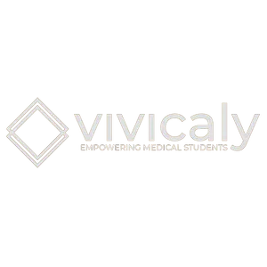
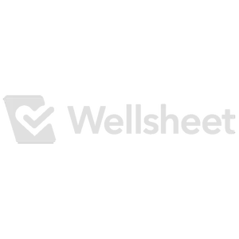
📑 H-MET Certificate
Our flagship Healthcare Management, Entrepreneurship, and Technology (H-MET) Certificate Program enables future physicians to become leaders in our healthcare system. Through coursework, workshops, and real-world experiences, the H-MET Certificate Program gives medical students the fundamental tools they need to turn an innovative idea into a policy, business, or product.
The requirements of the certificate program include all of the following:
- Seminar Attendance: Students attend at least 12 PennHealthX seminars or lunch talks during their time at PSOM. PennHealthX occasionally offers other lectures, conferences, and presentations from across campus that can count towards this requirement.
- Course Requirement: Students complete at least 2 of the following: (A) a course from the Health Care Management major at Wharton (see PSOM's Additional Course Policy); (B) a relevant Frontiers in Medical Science course in Core 3; or (C) an alternative meaningful and educational experience (e.g., see our Ethical Algorithms for the Modern Clinician course offering).
- Experiential Component: Students complete an internship or research experience to explore a PennHealthX topic in greater depth. All approved experiences must involve a deliverable to be submitted to the certificate committee prior to graduation.
Contact our VPs: Curriculum with any questions.
🖇 Internship Awards
We financially support PSOM medical students to pursue summer opportunities in healthcare management, entrepreneurship, and technology. We are especially interested in supporting projects that students would not otherwise encounter or be able to fund, such as unpaid or underpaid summer internships at startup companies. Recipients are eligible for up to $1,500 in funding and the chance to present their work in the fall at the annual PennHealthX conference.
How to Apply. Email us with the following:
- a description of the project, including your role, time commitment, and what you hope to gain from the internship (750 words).
- a brief statement of why current funding for this project is insufficient (100 words).
- your resume.
- proof of your anticipated involvement with the organization (CC'ing us on an email thread is sufficient).
Importantly, you cannot have equity in the organization at the time of application.
Direct any questions to our VPs: Entrepreneurship/Ventures.